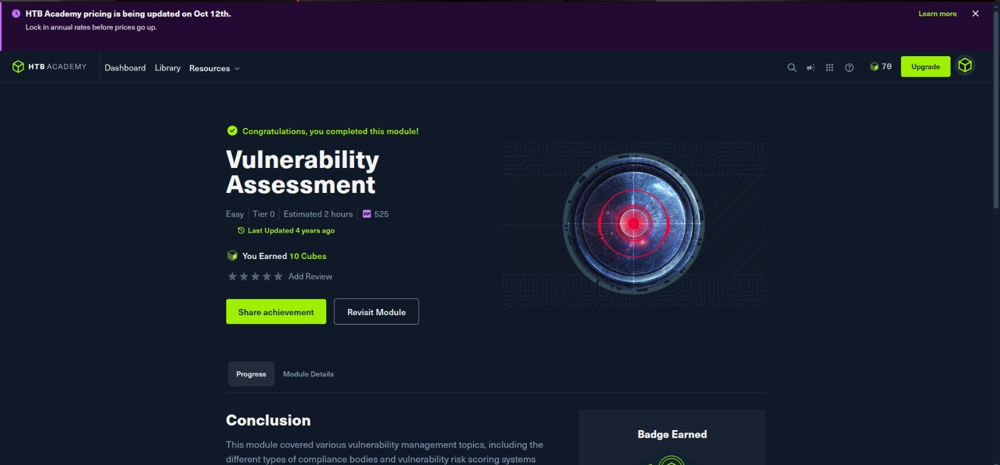
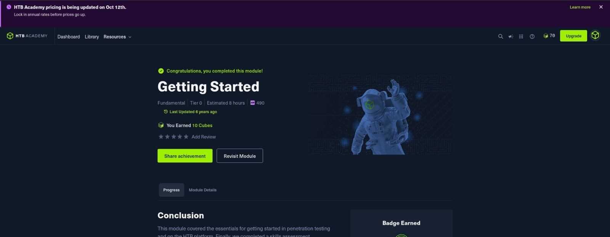
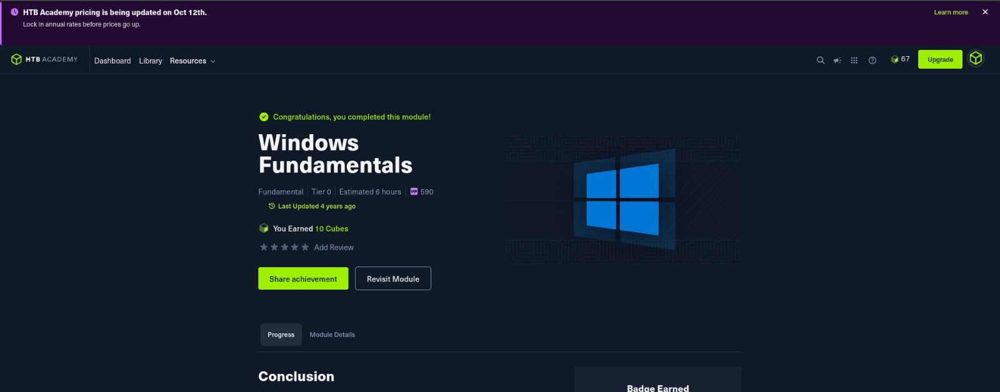

Technical University of Kenya
[Optional: relevant units, final year project SmartVisitor, class/award.]
Hello, I'm
Focused on Security Operations, Penetration Testing and Network Security.
![Portrait of [Your Name]](images/prfp.jpeg)
I am a Computer Science graduand at the Technical University of Kenya with a growing focus on cybersecurity. My current interests are Security Operations, penetration testing, network security and vulnerability assessment.
Through cybersecurity training, practical labs and industry attachment, I have gained exposure to security monitoring, reconnaissance, web security and Linux-based security environments.
I learn best by doing: understanding how systems can be assessed, attacked and secured.
[Optional: relevant units, final year project SmartVisitor, class/award.]
[Optional: grade, clubs or responsibilities.]
Industrial Attachment · May to Aug, 2026
Exposure to security monitoring, vulnerability assessment, reconnaissance, phishing awareness, Linux and cloud infrastructure.

Visitor management system for residential estates with controlled access and role-based permissions. Laravel · React · MySQL.
View →
Hands-on practice with GoPhish as a social engineering tool. Designed a mail phishing campaign to create phishing awareness.

Reconnaissance, scanning and web testing in deliberately vulnerable environments. Nmap · Burp Suite · OpenVAS.
View →


Currently learning: CyberShujaa Security Analyst track